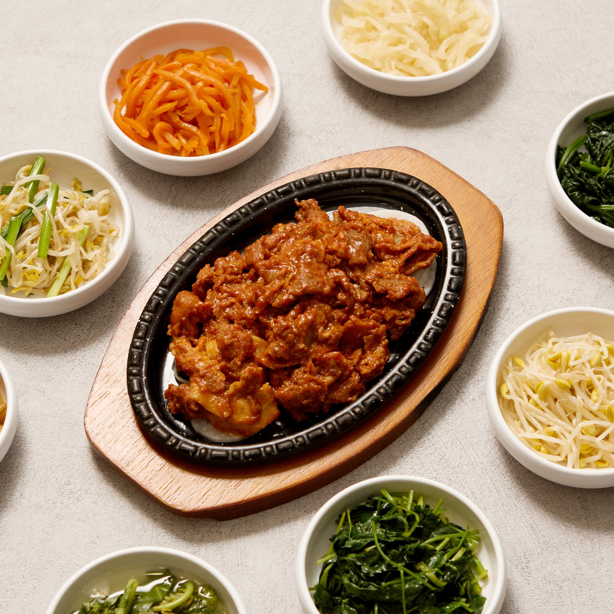
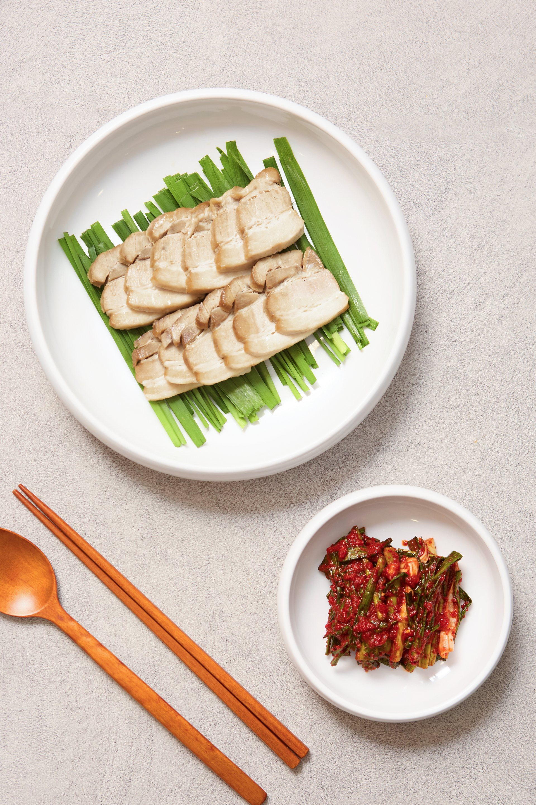
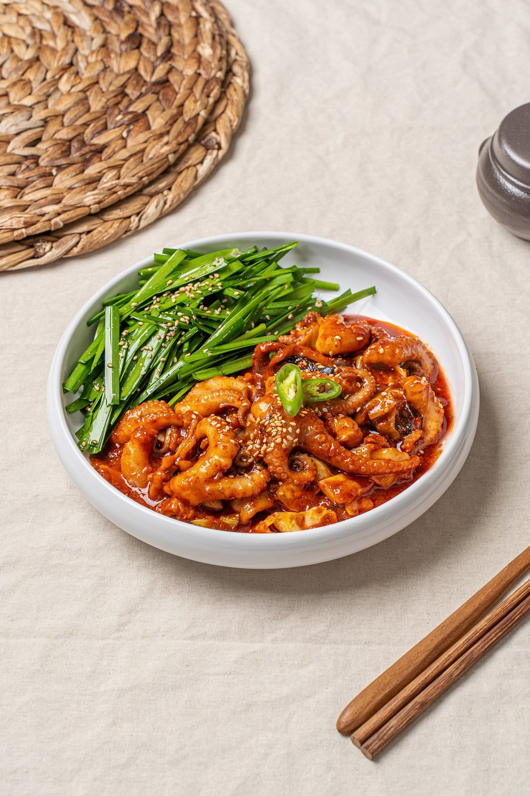
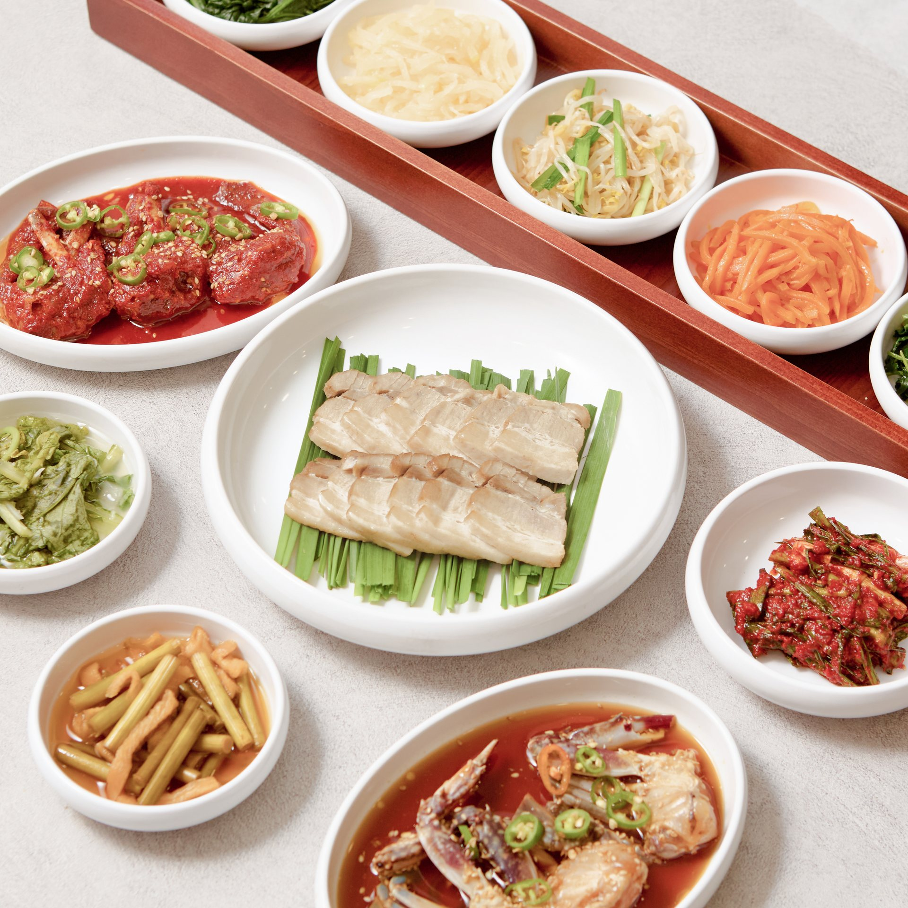

보리밥과 매일 정성껏 만든 8종 제철 나물·반찬이 기본으로 함께 나옵니다.

간장게장·양념게장·제육볶음·주꾸미숙회에 나물 6종과 보리밥, 된장찌개까지.

직화로 구워 불향을 입힌 감칠맛 깊은 돼지불고기 정식.

잡내 없이 부드럽게 완성한 촉촉하고 쫄깃한 수육.

양념주꾸미볶음과 주꾸미숙회, 게장까지 함께 오르는 인기 정식.

엄선한 고등어구이와 신선한 게장의 맛있는 조화.

연평도 암꽃게를 깊고 깔끔한 간장에 숙성한 명품게장.

매콤달콤 숙성시킨 깊고 진한 국내산 양념게장.

쪽파·부추와 고소하게 무쳐낸 제철 별미.
HOW TO EAT
따뜻한 보리밥 위에 게살을 올립니다.
게딱지에 밥을 넣고 장과 함께 비빕니다.
참기름 한 방울로 고소하게 마무리합니다.
제철 나물을 보리밥 위에 골고루 올립니다.
고추장과 참기름을 기호껏 더합니다.
슥슥 비벼 크게 한 술 뜨면 됩니다.
